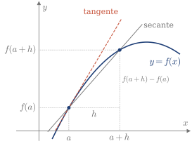
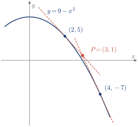
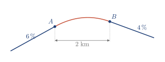
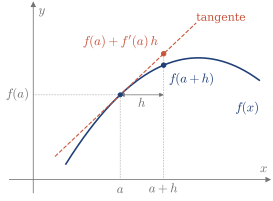

3.5 Derivada
La derivada mide la pendiente de una función en un punto y, también, la velocidad de cambio de una variable respecto a la otra.
Definición y recta tangente
Definición 3.8
Una función f es derivable en x=a si existe el límite f'(a)=\lim_{h\to0}\frac{f(a+h)-f(a)}{h}, que se llama derivada de f en x=a.
El cociente es la pendiente de la recta secante que pasa por (a,f(a)) y (a+h,f(a+h)). Cuando h\to0, la secante se acerca a la recta tangente, así que f'(a) es la pendiente de la tangente (Figura 3.12).

Figura 3.12. Recta secante y recta tangente en x=a.
Demo en GeoGebra
Mueve el punto con el deslizador rojo y reduce h con el azul. Observa cómo cambia la pendiente de la secante cuando h se acerca a 0, y qué ocurre justo en h=0. Después, activa la tangente y compárala con la secante.
Abrir la demo Autoría: donalduncan
Recuerda: recta tangente en x=a
y=f(a)+f'(a)(x-a).
Ejemplo 3.17
Demostrar que la derivada de f(x)=x^3 es f'(x)=3x^2.
Con la definición, f'(x)=\lim_{h\to0}\frac{(x+h)^3-x^3}{h}=\lim_{h\to0}\frac{3x^2h+3xh^2+h^3}{h}=\lim_{h\to0}\left(3x^2+3xh+h^2\right)=3x^2.
Comprobación. En x=1, con h=0.01, el cociente vale 3.0301, cerca de f'(1)=3.
A partir de la definición se obtienen las reglas y las derivadas elementales, que son lo que se usa en la práctica.
Recuerda: reglas de derivación
(f\pm g)'=f'\pm g', \qquad (kf)'=kf', \qquad (fg)'=f'g+fg', \qquad \left(\frac fg\right)'=\frac{f'g-fg'}{g^2}.
Recuerda: derivadas elementales
\def\arraystretch{1.7} \begin{array}{c|ccc|c} f(x) & f'(x) & \qquad\qquad & f(x) & f'(x)\\ \hline x^n & nx^{n-1} & & \sin x & \cos x\\ e^x & e^x & & \cos x & -\sin x\\ a^x & a^x\ln a & & \tan x & 1+\tan^2x=\dfrac{1}{\cos^2x}\\[2mm] \ln x & \dfrac1x & & \arcsin x & \dfrac{1}{\sqrt{1-x^2}}\\[2mm] \sinh x & \cosh x & & \arccos x & -\dfrac{1}{\sqrt{1-x^2}}\\[2mm] \cosh x & \sinh x & & \arctan x & \dfrac{1}{1+x^2} \end{array}
Ejemplo 3.18
Un satélite sigue la órbita \left(\frac x3\right)^2+\frac y9=1. En un momento dado abandona la órbita en la dirección de la recta tangente, para dirigirse a una estación situada en P=(3,1). Hallar los puntos de la órbita desde los que tiene que salir. (2025/26 3E)
La órbita es la parábola y=9-x^2, con y'=-2x. La tangente en x=a es y=(9-a^2)-2a(x-a). Tiene que pasar por P, así que 1=(9-a^2)-2a(3-a) \quad\Longrightarrow\quad a^2-6a+8=0 \quad\Longrightarrow\quad a=2\ \text{ o }\ a=4. Los puntos son (2,5) y (4,-7) (Figura 3.13).

Figura 3.13. Las dos tangentes a la órbita que pasan por P.
Comprobación. Las tangentes son y=13-4x e y=25-8x. En x=3, las dos valen 1.
Funciones a trozos
Una función derivable en un punto también es continua en él. Lo contrario no es cierto: la derivada puede no existir aunque la función sea continua, si los límites del cociente por los dos lados no coinciden. Esos límites son las derivadas laterales, f'(a^+) y f'(a^-).
Ejemplo 3.19
Estudiar la derivabilidad de f(x)=|x| en x=0.
Es continua en x=0. Con h>0, el cociente vale |h|/h=1, y con h<0, vale -1. Por tanto, f'(0^+)=1 y f'(0^-)=-1: no es derivable en x=0.
En una función a trozos, cada trozo se deriva por separado y solo hay que estudiar los puntos de unión.
Recuerda: en un punto de unión x=a
\text{continua:}\quad f(a^-)=f(a^+), \qquad\qquad \text{derivable:}\quad \text{además,}\ f'(a^-)=f'(a^+)\ \text{finitas}.
En la práctica, se deriva cada trozo y se calculan los límites de f'(x) cuando x\to a^- y x\to a^+. Si f es continua y esos límites son finitos, coinciden con las derivadas laterales. Si alguno es infinito o no existe, ese cálculo no sirve y hay que usar directamente la definición de derivada.
Ejemplo 3.20
Estudiar la derivabilidad en x=0 de: \text{(a)}\ \ f(x)=\begin{cases}x^2\sin\dfrac1x,&x\neq0\\[2mm]0,&x=0\end{cases} \qquad\qquad \text{(b)}\ \ g(x)=\sqrt[3]{x}.
(a) Si x\neq0, f'(x)=2x\sin\frac1x-\cos\frac1x, que no tiene límite en x=0. Pero con la definición, como el seno está acotado, f'(0)=\lim_{h\to0}\frac{h^2\sin(1/h)}{h}=\lim_{h\to0}h\sin\frac1h=0. Es derivable, aunque f'(x) no tenga límite en x=0.
(b) Si x\neq0, g'(x)=\frac13x^{-2/3}, que tiende a +\infty por los dos lados. Con la definición, \lim_{h\to0}\frac{\sqrt[3]{h}}{h}=\lim_{h\to0}h^{-2/3}=+\infty. No es derivable: en x=0, la recta tangente es vertical.
Ejemplo 3.21
Se van a construir tres tramos de carretera: dos rectos, con pendientes del 6,% y del 4,%, y uno central parabólico (Figura 3.14). Hallar las ecuaciones de los tres tramos. (2014/15 5E)

Figura 3.14. Los tres tramos de la carretera, con la escala vertical exagerada.
Con el origen en A, el tramo central va de x=0 a x=2, y y(x)=\begin{cases}0.06x,&x<0\\cx^2+dx+e,&0\leq x\leq2\\-0.04x+g,&x>2.\end{cases} La carretera no puede tener saltos ni esquinas, así que y tiene que ser continua y derivable en x=0 y x=2: \begin{aligned} y(0^-)=y(0^+)&:\ e=0, & y'(0^-)=y'(0^+)&:\ d=0.06,\\ y'(2^-)=y'(2^+)&:\ 4c+d=-0.04, & y(2^-)=y(2^+)&:\ 4c+2d+e=-0.08+g. \end{aligned} De aquí, c=-0.025 y g=0.1. El tramo central es y=-0.025x^2+0.06x, y el último, y=-0.04x+0.1.
Comprobación. En x=2, los dos tramos valen 0.02.
Aproximación lineal
Cerca de x=a, en lugar de la curva se puede usar su recta tangente (Figura 3.15). Es la aproximación lineal, y sale de quitar el límite en la definición de derivada: si h es pequeño, f'(a)=\lim_{h\to0}\frac{f(a+h)-f(a)}{h} \quad\Longrightarrow\quad f'(a)\approx\frac{f(a+h)-f(a)}{h}. Despejando f(a+h) se obtiene la fórmula de la aproximación.

Figura 3.15. Aproximación de f(a+h) con la recta tangente.
Recuerda
f(a+h)\approx f(a)+f'(a)\,h.
Ejemplo 3.22
Aproximar \sqrt{27} con la aproximación lineal.
Con f(x)=\sqrt x, se toma a=25, cuya raíz se conoce, y h=2. Como f'(x)=\dfrac{1}{2\sqrt x}, f'(25)=\frac1{10} y \sqrt{27}\approx5+\frac{1}{10}\cdot2=5.2.
Comprobación. El valor exacto es 5.196\ldots
Con los contenidos de esta sección puedes hacer los ejercicios 3.18–3.25.